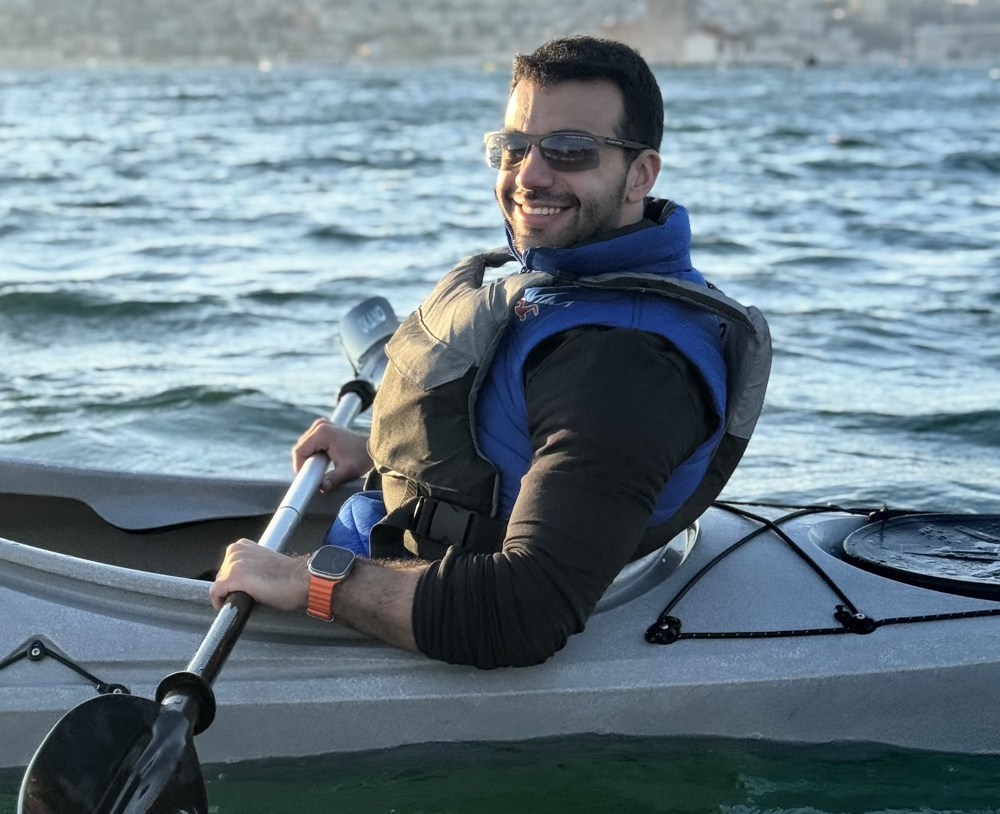

Emre Can Acikgoz
![]() PhD Student at UIUC NLP
PhD Student at UIUC NLP
Advised by Gokhan Tur and Dilek Hakkani-Tür
 Research Intern at Microsoft Research
Research Intern at Microsoft Research
Mentored by Baolin Peng and Jianfeng Gao
- Co-organizer, Lifelong Agents Workshop, ICLR 2026, COLM 2026
- Co-chair, Student Research Workshop, ACL 2027
Emre Can Acikgoz is a PhD student in Computer Science at UIUC, advised by Gokhan Tur and Dilek Hakkani-Tür. He is also currently a research intern at Microsoft Research, supervised by Baolin Peng and Jianfeng Gao. His research focuses on self-evolving LLM agents and agentic learning, with interests in post-training, self-play, and test-time scaling. His work has been published at top-tier venues including NeurIPS, ICLR, ACL, and EMNLP; representative works include ToolRL, CoALM, TT-SI, and Tool-R0. He co-organizes Lifelong Agents: Learning, Aligning, and Evolving at ICLR 2026 and COLM 2026. He is co-chair of the Student Research Workshop (SRW) at ACL 2027.
Project Lifelong Agent
The broader vision shaping my PhD is agents that continually learn, adapt, and generalize with minimal supervision, and that keep learning after deployment. The project has three pillars: Learning, Aligning, and Evolving. I focus primarily on Evolving: how agents can adapt themselves to new environments through experience, self-play, and test-time training.
News
- Two papers accepted to NeurIPS 2026: Adversarial Persuasion and MM-CreativityBench.
- Started as a research intern in the Deep Learning Group at Microsoft Research.
- Two papers accepted to EMNLP 2026: Tool-R0 (Findings) and PlanBench-XL.
- Two papers accepted to ACL 2026: TT-SI and Current Agents Fail to Leverage World Model as Tool for Foresight.
- Co-organized the First Workshop on Lifelong Agents at ICLR 2026.
- Released Tool-R0.
Publications /
* denotes equal contribution. Full list on Google Scholar.
-
Tool-R0: Self-Evolving LLM Agents for Tool-Learning from Zero Data
EMNLP 2026 Findings [pdf] [code] [models] [logs] [website] [tweet] -
Current Agents Fail to Leverage World Model as Tool for Foresight
ACL 2026 Main [pdf] -
TT-SI: Self-Improving LLM Agents with Test-Time Training
ACL 2026 Findings [pdf] [tweet] -
Lifelong Agents: Learning, Aligning, Evolving
ICLR 2026 Workshop Proposal [website] -
SpeakRL: Learning to Speak Before You Act with LLM Agents
IWSDS 2026 -
MAC: A Multi-Agent Framework for Interactive User Clarification in Multi-turn Conversations
IWSDS 2026 (Oral); NeurIPS 2025 MTI-LLM Workshop -
ToolRL: Reward is All Tool Learning Needs
NeurIPS 2025 [pdf] [code] [tweet] -
Conversational Agents in the Era of Large Language Models
IEEE Signal Processing Magazine 2025 -
Can a Single Model Master Both Multi-turn Conversations and Tool Use? CoALM: A Unified Conversational Agentic Language Model
ACL 2025 Main [pdf] [code] [models] [data] [website] [tweet] -
SMART: Self-Aware Agent for Tool Overuse Mitigation
ACL 2025 Findings [pdf] [code] [tweet] -
TD-EVAL: Revisiting Task-Oriented Dialogue Evaluation by Combining Turn-Level Precision with Dialogue-Level Comparisons
SIGDIAL 2025 (Oral) [pdf] [code] -
A Desideratum for Conversational Agents: Capabilities, Challenges, and Future Directions
arXiv 2025 [pdf] [code] -
PIPA: A Unified Evaluation Protocol for Diagnosing Interactive Planning Agents
Under review -
ReSpAct: Harmonizing Reasoning, Speaking, and Acting Towards Building LLM-Based Conversational AI Agents
IWSDS 2025 [pdf] [code] -
Bridging the Bosphorus: Advancing Turkish Large Language Models through Strategies for Low-Resource Language Adaptation and Benchmarking
ACL MRL 2024 (first open-source Turkish LLM family) [pdf] [code] [models] [tweet] -
Hippocrates: An Open-Source Framework for Advancing Large Language Models in Healthcare
NeurIPS GenAI4Health 2024 (Oral) (first fully open-source medical LLM family) [pdf] [website] [models] [tweet] -
ViLMA: A Zero-Shot Benchmark for Linguistic and Temporal Grounding in Video-Language Models
ICLR 2024 [pdf] [code] -
Transformers on Multilingual Clause-Level Morphology
EMNLP MRL Shared Task 2022 (winner of all three subtasks) [pdf] [code]
Industry experience
-
Microsoft Research, Research Intern, Deep Learning Group Sep 2026 – PresentRedmond, WA
-
Salesforce AI Research, Research Intern, LLM and Reasoning Team May 2026 – Aug 2026Palo Alto, CA
-
Amazon Alexa AI, Research Intern, Conversational AI Team May 2025 – Aug 2025Bellevue, WA
Service
Organizing
- Co-chair, Student Research Workshop, ACL 2027
- Co-organizer, Lifelong Agents Workshop, COLM 2026
- Co-organizer, Lifelong Agents Workshop, ICLR 2026
- Co-organizer, Midwest Speech and Language Days (MSLD) 2026, UIUC
Reviewing
- MLNeurIPS 2026/2025/2024, ICLR 2026/2025/2024, COLM 2026/2025
- NLPACL 2026/2025, EMNLP 2026/2025/2022, NAACL 2025, EACL 2026, AACL 2025
- OthersSIGDial 2026, NeurIPS 2025 MTI-LLM Workshop, EACL 2026 SIGTURK Workshop, ACM CAIS 2026
Teaching
- COMP 547: Deep Unsupervised Learning
- COMP 541: Deep Learning
- COMP 542: Natural Language Processing
- COMP 541: Deep Learning
- COMP 547: Deep Unsupervised Learning
Two truths and a lie :)
- I won national math olympiads twice.
- I made my own custom Harley-Davidson when I was 16.
- I used to play college football.